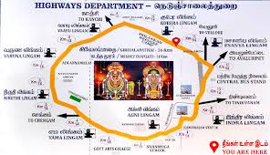
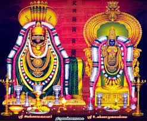
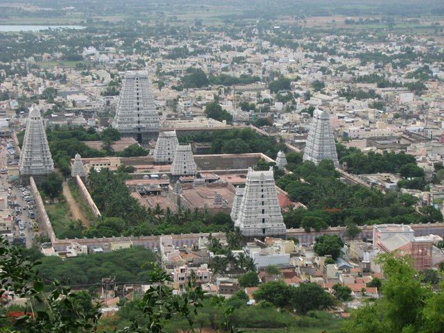

Tiruvanamalai
- This is the town in Tamilnadu
- It is a one of the Most popular lord shiva temple
- The agni lingam of lord shiva
- The history of Arunachalam temple is boasts a captivating history
- That spans centuries,holding immense significance in hindu mythology
- And atracting of devtoeis is from far and wide
- The templs's origins can be traced back to the 7th century
- The temple gali gopuram is the 8 gopurams on temple first we darshan subramanya swami temple
- And we go to Arunachaleswar temple and next to parvsthi devi temple
This is the town in Tamilnadu
It is a one of the Most popular lord shiva temple
The agni lingam of lord shiva
The history of Arunachalam temple is boasts a captivating history
That spans centuries,holding immense significance in hindu mythology
And atracting of devtoeis is from far and wide

and car or auto is avalible time period is 2hrs
To go the Arunachaleswar giri pradakshan is more temples is on route
The templs's origins can be traced back to the 7th century
The temple gali gopuram is the 8 gopurams on temple first we darshan subramanya swami temple
And we go to Arunachaleswar temple and next to parvsthi devi temple
And The most popular in Arunachalam giri pradikshan
The total distance of giri pradakshan is 14km
The time period of giri pradakshin is by walk is 5hrs to 6hrs
It's a mini zoo logical park and games also avalible
The lot of enjoyment in the zoo
And one more place in vellore is palamathi hills it's nice hills in vellore free of cost
One more park is periyar park is very nice full nature is beautiful of park
And vellore fort is also avalible
And more temples are avalible in vellore
The city buses is avalible for transports


The 9 differt types of lord shiva temples on giri pradakshan
The mobiles are avalible on Arunachaleswar temple
And to place are near Tiruvanamalai is virupaksha caves and satanur reservior
Javadhu hills and to visit more ashramams in Tiruvanamalai
And atracting of devtoeis is from far and wide
The templs's origins can be traced back to the 7th century
The temple gali gopuram is the 8 gopurams on temple first we darshan subramanya swami temple
And after darshan the prasadam is laddu and janthikalu and arisalu